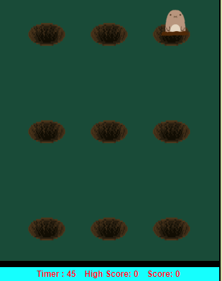
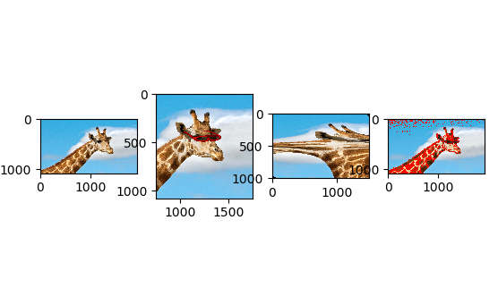
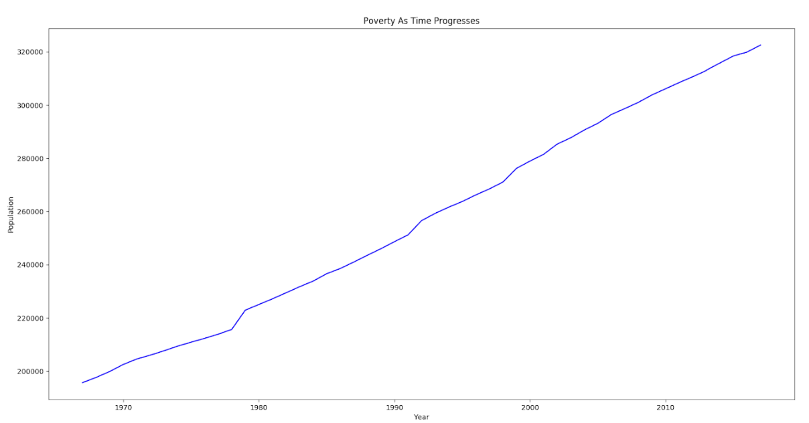

Home
Portfolio
About Me
This is my Portfolio Page!

This is our SCRATCH game
App Inventor Project

The game we created was Mole Mash.
In the game you are supposed to tap
on as many moles as you can to increase
your score within 45 seconds. After a
certain score is reached the game becomes
harder as more moles spawn and they
change
holes faster. This game works on Android
and can be accessed with MIT App Inventor 2
Click the image to continue
This is our Python text adventure game, White Collar Wonderland
BLACKJACK
Image Manipulation
Here we altered an image and its bits and bytes to produce a desired result.
We first pasted glasses onto the image, then we distorted the image,
and finally we replaced the individual pixels of the image

Graphing

Here we used the computer to graph a set of data that was from some .txt files
Our graph compares the total amount of people in poverty over time
in the U.S.